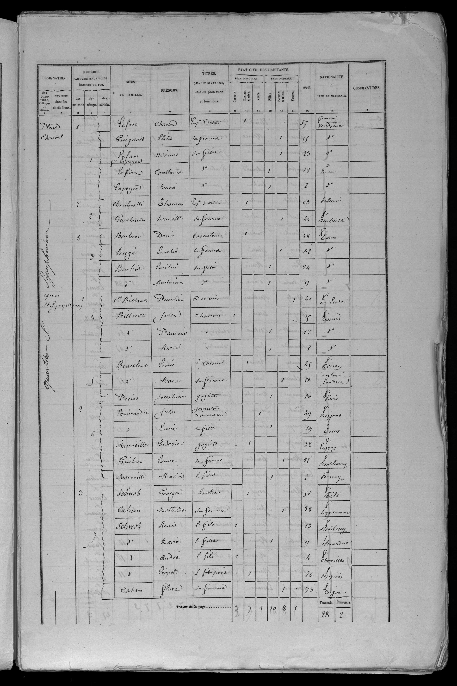

| Quartier | Ménage | Nom | Prénom | Rôle | Sexe | Statut | Âge | Nationalité | Naissance | Observations |
|---|---|---|---|---|---|---|---|---|---|---|
| QuartierStSymphorien | 1 | Lefort | Charles | EmployeDoctroi | M | 57 | Française | Vendôme | ||
| QuartierStSymphorien | 1 | Guignard | Ellia | Femme | F | 55 | Française | Vendôme | ||
| QuartierStSymphorien | 1 | Lefort / Lapeyre | Noémie | Fille | F | 23 | Française | Vendôme Vendôme | ||
| QuartierStSymphorien | 1 | Lefort | Constance | Fille | F | 19 | Française | Tours | ||
| QuartierStSymphorien | 1 | Lapeyre | Marie | Fille | F | 2 | Française | Tours | ||
| QuartierStSymphorien | 2 | Chmielewski | Thomas | EmployeDoctroi | M | 63 | Polonaise | |||
| QuartierStSymphorien | 2 | Guestault | Henriette | Femme | F | 46 | Française | Amboise | ||
| QuartierStSymphorien | 3 | Barbier | Denis | Basculeur | M | 48 | Française | Tours | ||
| QuartierStSymphorien | 3 | Hugé | Emelie | Femme | F | 42 | Française | Tours | ||
| QuartierStSymphorien | 3 | Barbier | Emilia | Fille | F | 24 | Française | Tours | ||
| QuartierStSymphorien | 3 | Barbier | Malvina | Fille | F | 9 | Française | Tours | ||
| QuartierStSymphorien | 4 | Billault | Pauline | MarchandeDeVIn | F | 40 | Française | Eude | ||
| QuartierStSymphorien | 4 | Billault | Jules | Charron | M | 15 | Française | Tours | ||
| QuartierStSymphorien | 4 | Billault | Pauline | F | 12 | Française | Tours | |||
| QuartierStSymphorien | 4 | Billault | Marie | F | 8 | Française | Tours | |||
| QuartierStSymphorien | 5 | Beaulieu | Louis | LieutenantColonel | M | 45 | Française | Rouen | ||
| QuartierStSymphorien | 5 | / Beaulieu | Marie | Femme | F | 22 | Anglaise | Londres | ||
| QuartierStSymphorien | 5 | Preiss | Josephine | Gagiste | F | 30 | Française | Paris | ||
| QuartierStSymphorien | 6 | Lamiraudie | Jules | InspecteurDAssurance | M | 49 | Française | Brignad | ||
| QuartierStSymphorien | 6 | Lamiraudie | Louise | Fille | F | 19 | Française | Tours | ||
| QuartierStSymphorien | 6 | Marveille | Ludovic | Gagiste | M | 32 | Française | Leugny | ||
| QuartierStSymphorien | 6 | / Guiber | Louise | Femme | F | 22 | Française | Semblançay | ||
| QuartierStSymphorien | 6 | Marveille | Maria | Fille | F | 2 | Française | Pernay | ||
| QuartierStSymphorien | 7 | Schwob | Georges | Rentier | M | 50 | Française | Bâle | ||
| QuartierStSymphorien | 7 | Cahun | Mathilde | Femme | F | 38 | Française | Haguenau | ||
| QuartierStSymphorien | 7 | Schwob | René | Fils | M | 13 | Française | Strasbourg | ||
| QuartierStSymphorien | 7 | Schwob | Marie | Fille | F | 9 | Française | Alexandrie | ||
| QuartierStSymphorien | 7 | Schwob | André | Fils | M | 4 | Française | Chaville | ||
| QuartierStSymphorien | 7 | Schwob | Léopold | Père | M | 76 | Française | Sappois | ||
| QuartierStSymphorien | 7 | Cahers | Flore | Femme | F | 73 | Française | Dijon |
Nombre de personnes recensées: 30

Publication :Archives départementales d'Indre-et-Loire 6 rue des Ursulines 37000 Tours France
Source :Paris Imprimerie Paul Dupont 1872